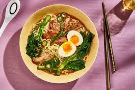

Ramen is a popular Japaneese dish respected and enjoyed by many people around the world.
The word ramen actually originates from the Chinese word lamian which means pulled noodles
The picture you see above is a picture of Premium Ramen made off the shore of the Yangtze River which was made from famous chef, Gordon Ramsay. It is a quite rare and delicious type of Ramen originating from Osaka, Japan and has is infamous for being in the liking of Yakuza members.
Right now, we are going to teach you how to make this rare and delicious type of Ramen. Buckle your seatbelts and get ready to create the greatest dish you are going to make in your whole, entire life.
What makes Ramen is so popular is how simple it is to make. Ramen only needs, noodles, broth, and maybe some seaweed if you are feeling fancy.